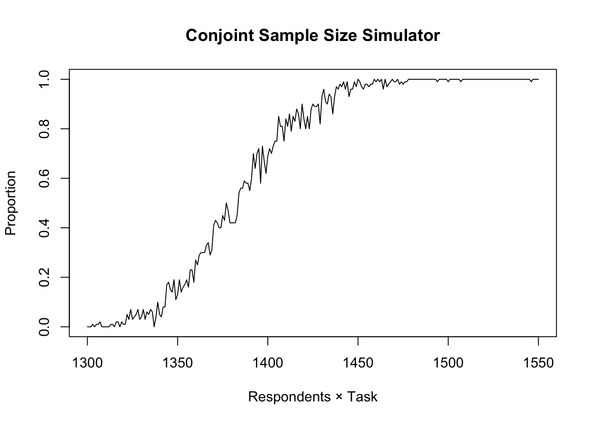

# コードの読み込み
source("https://raw.githubusercontent.com/JaehyunSong/Simulation/master/Cjoint_N_Simulation.R")
Cjoint.N.Sim(n.Attr, n.Level, n.Choice, n.Sim, n.Min, n.Max,
chk.dupli, min.occur)Conjoint Analysis Sample Size Simulator
使い方
- 並列演算を行うため{doMC}、{foreach}パッケージを事前にインストールしておいてください。
- CPUがシングルコアの場合でも、一応インストールしておいて下さい。
- 本シミュレーターは、CPUのコア全てを使います。(並列演算を行わない場合と比べて数倍早くなりました。)
- 引数について
n.Attr: 属性の数 (スカラー)n.Level: 各属性の水準の数 (ベクトル)n.Choice: プロフィールの数 (スカラー)n.Sim: 各サンプルサイズごとのシミュレーション回数 (スカラー)n.Min: 最小サンプルサイズ (スカラー)n.Max: 最大サンプルサイズ (スカラー)chk.dupli: 同じ水準が同時に出現したら欠損扱いする (論理型)min.occur: 各属性が何回出現されるべきか (スカラー)
時短のためには
属性の数が結果に与える影響はほぼありません。したがって、n.Attr = 2とし、n.Level = c(2, 水準の最大数)と設定した方が早くシミュレーションできます。
実行例
source("https://raw.githubusercontent.com/JaehyunSong/Simulation/master/Cjoint_N_Simulation.R")
Cjoint.N.Sim(n.Attr = 2, n.Level = c(2, 4), n.Choice = 2,
n.Sim = 100, n.Min = 1300, n.Max = 1550,
chk.dupli = TRUE, min.occur = 500)Loading required package: foreachLoading required package: iteratorsLoading required package: parallel